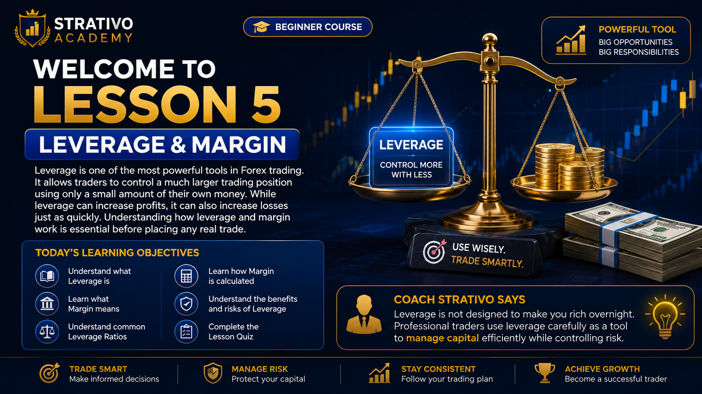
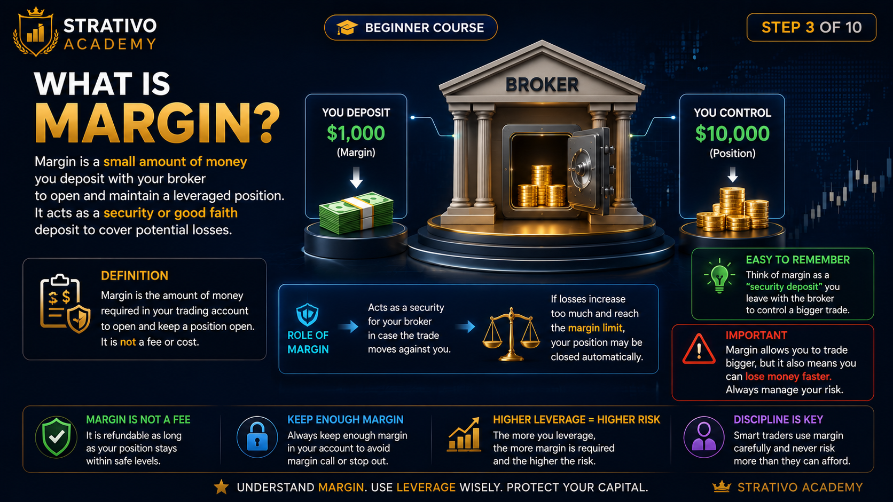
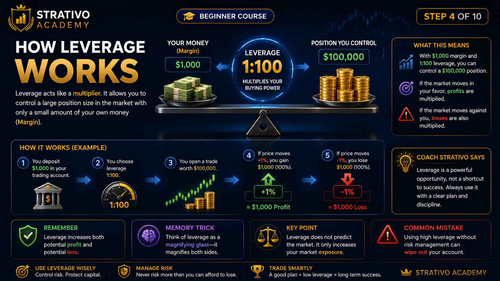
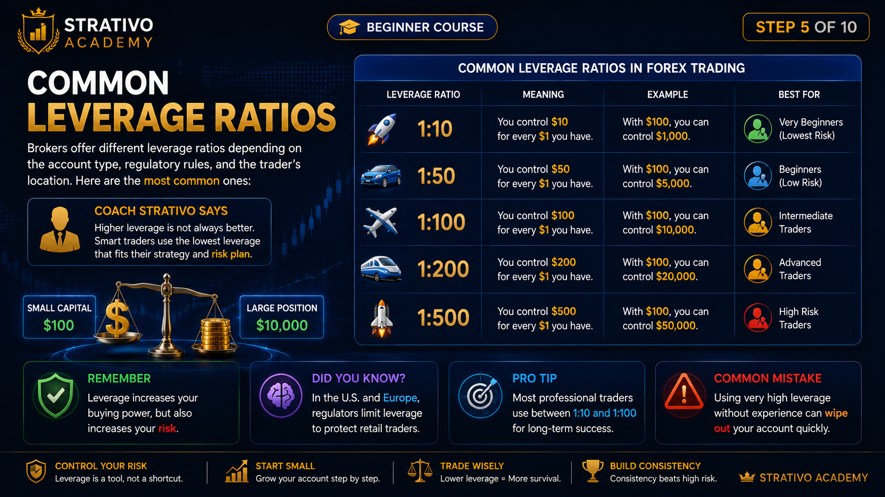
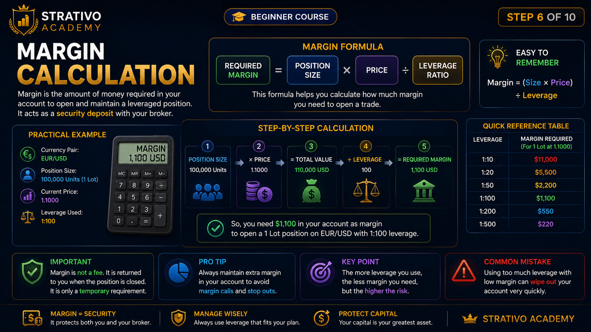
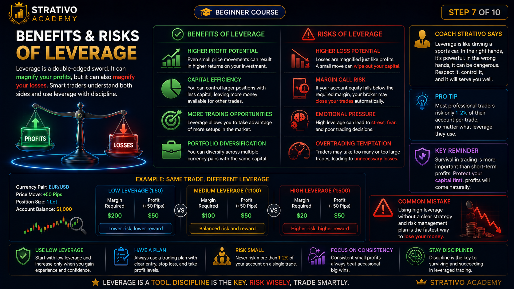
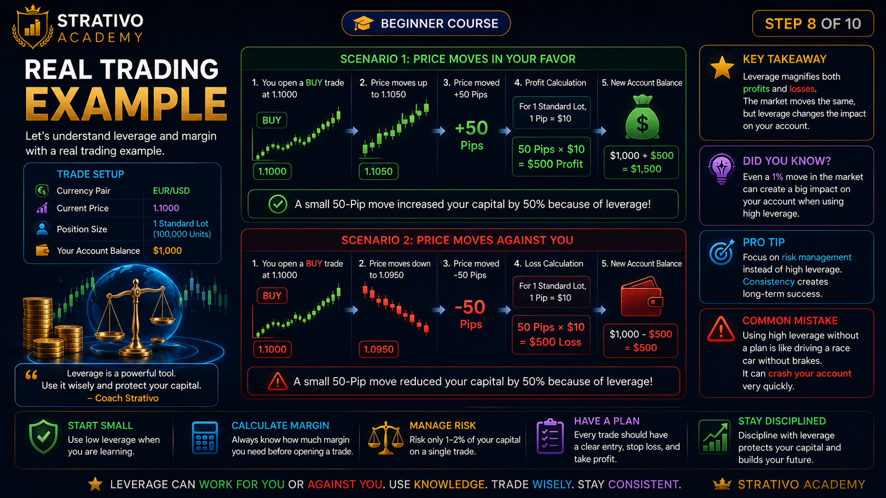
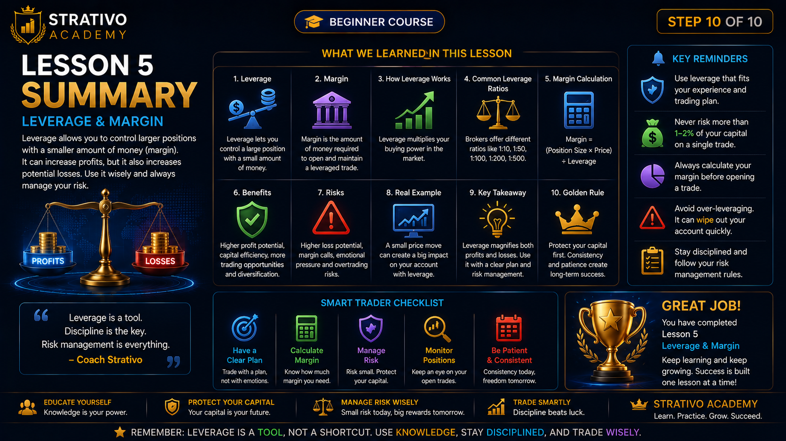

Lesson 5 - Leverage & Margin
Step 1 of 10
Welcome to Lesson 5
Leverage & Margin
Welcome to one of the most important lessons in Forex trading.
Leverage allows traders to control a much larger trading position using only a small amount of their own money.
Margin is the amount of money required to open and maintain that trade.
While leverage can increase profits, it can also increase losses just as quickly. Learning how to use it responsibly is a key skill for every successful trader.

📘 Simple Definition
Leverage increases your buying power.
Margin is the money you need to access that buying power.
🎯 Today's Learning Objectives
- ✔ Understand what Leverage is.
- ✔ Learn what Margin means.
- ✔ Discover how Leverage works.
- ✔ Learn common Leverage ratios.
- ✔ Calculate Margin requirements.
- ✔ Understand the benefits and risks.
- ✔ Study a real trading example.
- ✔ Complete the Lesson 5 Quiz.
💡 Did You Know?
Professional traders don't use high leverage to get rich quickly.
They use leverage carefully as a tool while protecting their trading capital through proper risk management.
⚠ Beginner Mistake
Many beginners think that higher leverage always means higher profits.
In reality, higher leverage also increases the size of potential losses.
🧠 Memory Trick
Think of leverage like driving a sports car.
It gives you more power, but you must control it carefully.
More power without control can lead to bigger mistakes.
🎯 Coach's Tip
The best traders don't use the highest leverage available.
They choose the amount of leverage that matches their trading plan and risk management strategy.
What is Leverage?
Leverage is a tool that allows you to control a much larger trading position using a much smaller amount of your own money.
Instead of paying the full value of a trade, your broker lets you borrow the remaining amount.
This increases your buying power, allowing you to trade larger positions than your account balance alone would normally allow.
📘 Simple Definition
Leverage = Borrowed Buying Power
It helps traders control larger trades while using only a small portion of their own money.
💡 Easy Example
Imagine you have only $100.
With 1:100 Leverage, you can control a trade worth approximately $10,000.
Your broker provides the extra buying power, but you are still responsible for any profit or loss.
🌍 Did You Know?
Without leverage, many traders would need thousands of dollars to open even a single standard Forex trade.
Leverage makes Forex trading more accessible, especially for smaller accounts.
⚠ Beginner Mistake
Many beginners believe leverage creates free money.
It doesn't.
Leverage only increases your trading power. It also increases the size of both profits and losses.
🧠 Memory Trick
🚗 A bigger engine gives a car more power.
📈 Leverage gives your trading account more buying power.
More power always requires more responsibility.
🎯 Coach's Tip
Professional traders don't choose the highest leverage available.
They choose the amount of leverage that fits their trading strategy and risk management plan.
What is Margin?
Margin is the amount of money you must have in your trading account to open and maintain a leveraged trade.
It is not a fee and it is not a cost.
Think of Margin as a security deposit that your broker temporarily sets aside while your trade is open.

📘 Simple Definition
Margin = Money Required to Open a Trade
The higher the leverage, the smaller the margin required.
💡 Easy Example
Imagine you want to control a trade worth $10,000.
With 1:100 Leverage, you only need approximately $100 as Margin.
The broker provides the remaining buying power.
🌍 Did You Know?
Margin remains reserved while your trade is open.
When you close the trade, your used Margin becomes available again.
⚠ Beginner Mistake
Many beginners think Margin is a fee paid to the broker.
This is incorrect.
Margin is simply the amount of your own money set aside to support the trade.
🧠 Memory Trick
🏦 Leverage gives you buying power.
💰 Margin unlocks that buying power.
Leverage + Margin = Larger Trading Position
🎯 Coach's Tip
Never use all of your account balance as Margin.
Always leave free Margin available to handle normal market fluctuations and reduce the risk of a Margin Call.
How Leverage Works
Now that you understand Leverage and Margin, let's see how they work together.
Leverage allows you to control a much larger trade than the money you actually have in your account.
Your broker temporarily provides the additional buying power, while your Margin acts as a security deposit.

📘 Simple Example
Your Trading Account: $500
Leverage: 1:100
Maximum Position You Can Control: $50,000
🔄 Step-by-Step Process
- 1️⃣ Deposit money into your trading account.
- 2️⃣ Choose your Lot Size.
- 3️⃣ The broker applies your Leverage.
- 4️⃣ Margin is reserved from your balance.
- 5️⃣ Your trade opens with increased buying power.
💡 Did You Know?
The amount of Leverage does not guarantee larger profits.
It simply allows you to trade larger positions.
Your trading decisions still determine whether you make a profit or a loss.
⚠ Beginner Mistake
Many beginners believe they should always use the maximum Leverage available.
High Leverage also increases the speed at which losses can reduce your account balance.
🧠 Memory Trick
💰 Margin
↓
⚡ Leverage
↓
📈 Larger Position
↓
📊 Bigger Opportunity
⚠ Bigger Risk
🎯 Coach's Tip
Think of Leverage as a powerful tool—not a shortcut to quick profits.
Professional traders combine Leverage with proper Risk Management, disciplined position sizing, and well-planned trading strategies.
📝 Quick Recap
- ✔ Leverage increases buying power.
- ✔ Margin is the money required to open the trade.
- ✔ Larger positions mean larger potential profits.
- ✔ Larger positions also mean larger potential losses.
What does leverage primarily increase?
Select an answer to receive immediate feedback.
Common Leverage Ratios
Brokers offer different leverage ratios depending on their regulations, account type, and the country where they operate.
A leverage ratio shows how much buying power you receive for every $1 of your own money.
The larger the ratio, the larger the position you can control—but the higher your potential risk.

📊 Common Leverage Ratios
- 1:10 → $1 controls $10
- 1:30 → $1 controls $30
- 1:50 → $1 controls $50
- 1:100 → $1 controls $100
- 1:200 → $1 controls $200
- 1:500 → $1 controls $500
💡 Example
If your account balance is $100:
• With 1:10 leverage, you can control approximately $1,000.
• With 1:100 leverage, you can control approximately $10,000.
• With 1:500 leverage, you can control approximately $50,000.
🌍 Did You Know?
Many regulated brokers limit the maximum leverage available to retail traders to help reduce excessive trading risk.
Other brokers may offer much higher leverage, but using it responsibly is always important.
⚠ Bigger Leverage Doesn't Mean Bigger Success
High leverage can make profits grow faster.
Unfortunately, it can also make losses grow just as quickly.
Many beginner traders lose money because they focus only on the potential profits and ignore the increased risk.
🧠 Memory Trick
Think of leverage as the zoom function on a camera.
A higher zoom makes everything appear bigger.
In trading, higher leverage makes both profits and losses appear bigger.
🎯 Coach's Tip
Professional traders don't choose leverage based on the highest number available.
They choose a leverage level that matches their trading strategy, account size, and risk management plan.
📝 Key Takeaways
- ✔ A leverage ratio shows your buying power.
- ✔ Higher leverage means larger trading positions.
- ✔ Higher leverage also means higher risk.
- ✔ Successful traders use leverage carefully, not aggressively.
Margin Calculation
Now that you understand Leverage, let's learn how to calculate the Margin required to open a trade.
Margin depends on two things:
✔ The size of your trade.
✔ The leverage you are using.
The higher the leverage, the less Margin you need.

📘 Simple Formula
Margin = Trade Size ÷ Leverage
This formula tells you how much of your own money is required to open a leveraged position.
💡 Example 1
Trade Size: $10,000
Leverage: 1:100
Margin Required: $10,000 ÷ 100 = $100
💡 Example 2
Trade Size: $50,000
Leverage: 1:500
Margin Required: $50,000 ÷ 500 = $100
🌍 Did You Know?
Two traders can control completely different trade sizes while using the same amount of Margin, simply because they are using different leverage ratios.
⚠ Margin Call
If your losses become too large and your available Margin falls below your broker's minimum requirement, you may receive a Margin Call.
If you do not add more funds or reduce your position, your broker may automatically close some or all of your trades to prevent further losses.
🧠 Memory Trick
📈 Bigger Trade Size = More Margin Needed
⚡ Higher Leverage = Less Margin Needed
Think of leverage as reducing the amount of money you need to lock in before opening a trade.
🎯 Coach's Tip
Always keep some Free Margin in your account.
Using your entire balance as Margin leaves no room for normal market movements and greatly increases the risk of a Margin Call.
📝 Key Takeaways
- ✔ Margin is calculated using Trade Size and Leverage.
- ✔ Higher Leverage reduces the Margin required.
- ✔ Lower Leverage requires more Margin.
- ✔ Keep Free Margin available to manage risk safely.
Benefits & Risks of Leverage
Leverage is one of the most powerful tools in Forex trading.
When used correctly, it allows traders to participate in larger market movements with a smaller amount of capital.
However, if used carelessly, leverage can also increase losses very quickly.
Successful traders understand both the advantages and the risks before using leverage.

✅ Benefits of Leverage
- ✔ Control larger trading positions with less capital.
- ✔ Make Forex trading accessible for smaller accounts.
- ✔ Use your capital more efficiently.
- ✔ Increase profit potential when trades are managed properly.
⚠ Risks of Leverage
- ❌ Losses increase just as quickly as profits.
- ❌ High leverage can empty an account in a short time.
- ❌ Poor risk management may lead to a Margin Call.
- ❌ Emotional trading becomes more difficult with oversized positions.
💡 Real-Life Example
Imagine using a sharp kitchen knife.
In skilled hands, it prepares food safely and efficiently.
In careless hands, it can cause serious injury.
Leverage works the same way—it is a powerful tool that must be handled with knowledge and discipline.
🌍 Did You Know?
Many professional traders intentionally use lower leverage than their broker allows.
They focus on protecting their capital first and growing their accounts consistently over time.
🧠 Golden Rule
Higher Leverage ≠ Higher Success
Higher leverage simply means higher exposure to market movements.
Your trading plan, discipline, and risk management determine whether that exposure results in profits or losses.
🎯 Coach's Tip
Never choose leverage because you want to make money faster.
Choose leverage that matches your trading strategy and your ability to manage risk.
Protecting your trading account is always more important than chasing large profits.
📝 Key Takeaways
- ✔ Leverage increases buying power.
- ✔ Leverage increases both profits and losses.
- ✔ Risk management is more important than high leverage.
- ✔ Professional traders protect capital before seeking profits.
Real Trading Example
Let's bring everything you've learned together with a simple Forex trading example.
This example shows how Leverage, Margin, and Profit or Loss work in a real trading situation.

📊 Trading Setup
- Account Balance: $500
- Leverage: 1:100
- Trade Size: $10,000
- Margin Required: $100
- Currency Pair: EUR/USD
🚀 Opening the Trade
You deposit $500 into your trading account.
Using 1:100 Leverage, you open a trade worth $10,000.
Only $100 is reserved as Margin, leaving the remaining balance available as Free Margin.
📈 If the Trade Goes in Your Favor
The market moves in the direction you predicted.
Your position earns a profit.
After closing the trade:
✔ Your profit is added to your account.
✔ Your reserved Margin is released.
✔ Your account balance increases.
📉 If the Trade Goes Against You
If the market moves against your position, your trade begins losing money.
If losses become too large, your Free Margin decreases.
If your account falls below the broker's required Margin level, you may receive a Margin Call or your broker may automatically close your trade to limit further losses.
🌍 Did You Know?
Successful traders don't focus on using the highest leverage.
They focus on controlling risk, protecting their capital, and taking high-quality trading opportunities.
🧠 Complete Trading Flow
💰 Deposit Funds
↓
⚡ Select Leverage
↓
📊 Open Trade
↓
💵 Margin Reserved
↓
📈 Market Moves
↓
✅ Profit or ❌ Loss
🎯 Coach's Final Advice
Leverage is designed to increase your buying power—not to encourage unnecessary risk.
The most successful traders survive because they protect their capital first.
Always trade with a plan, manage your risk, and remember that consistency is more valuable than chasing quick profits.
📝 Lesson 5 Summary
- ✔ Leverage increases buying power.
- ✔ Margin is the money required to open a leveraged trade.
- ✔ Higher leverage reduces the Margin required.
- ✔ Leverage increases both potential profits and potential losses.
- ✔ Risk management is essential for long-term success.
🧠 Lesson 5 Quiz
Test your understanding of
Leverage, Margin, Risk, and Position Size.
Answer all
10 questions.
Aim for at least
70%
to pass the Lesson 5 mastery target.
Loading Question...
📚 Before You Start
- ✔ Read every question carefully.
- ✔ Think before selecting an answer.
- ✔ Learn from the explanation after each question.
- ✔ You can retry the quiz anytime to improve your score.
💡 Learning Tip
Don't worry if you don't get a perfect score on your first attempt.
Review the explanation, retry the quiz,
and focus on understanding the concept rather than memorizing the answer.
🎉 Congratulations!
You have successfully completed Lesson 5 – Leverage & Margin.
You now understand how traders can control larger market positions using leverage, how margin works, and why proper risk management is essential for long-term trading success.
These concepts are used by traders every day and form an important foundation for professional Forex trading.

🏆 What You Learned
✔ What Leverage is.
✔ What Margin is.
✔ How Leverage works.
✔ Common Leverage Ratios.
✔ How to calculate Margin.
✔ The benefits and risks of Leverage.
✔ A complete real trading example.
🧠 Lesson Recap
Remember these four key ideas:
⚡ Leverage increases your buying power.
💰 Margin is the money required to open a leveraged trade.
📈 Higher leverage means larger trading positions.
🛡️ Smart risk management protects your trading account.
💡 Golden Rule
Professional traders don't succeed because they use the highest leverage.
They succeed because they understand risk, protect their capital, and stay disciplined in every trade.
🎓 Coach Strativo Says
Leverage is one of the most powerful tools in trading—but only when combined with patience, discipline, and proper risk management.
Never judge a trader by the size of their profits. Judge them by how well they protect their capital.
Consistency always beats taking unnecessary risks.
🚀 Coming Next
In Lesson 6 – Market Orders, you'll learn how to enter and exit trades using different order types, including Market Orders, Limit Orders, and Stop Orders.
— Strativo Academy